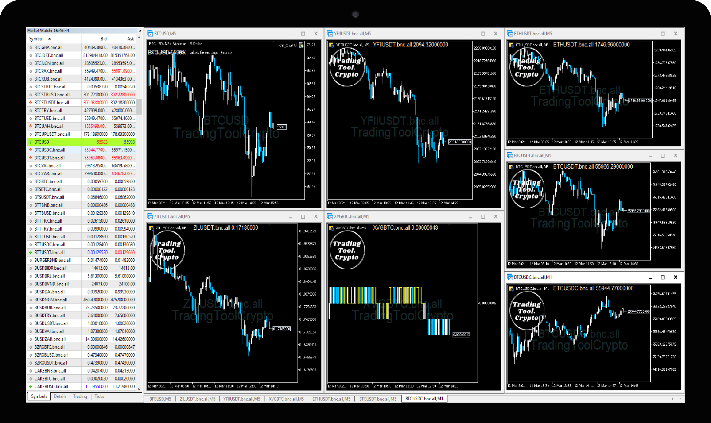

TradingToolCrypto
TradingToolCrypto
Crypto Charts Package
Realtime Orderbook Data, Download All Historical Data and Supports All Markets
The Crypto Charting package for MetaTrader (MT5) includes real time orderbooks, tick data, and candle stick bars on all timeframes (M1-Monthly). All historical data from exchanges can be downloaded into Metatrader for technical analysis and backtesting strategies within the built in Strategy Tester. The historical crypto chart data can also be exported from MetaTrader into CSV format for storage and later use.
The Crypto Charts robot collects one minute data (M1) from the exchanges via REST Api. Once the data is retrieved, the platform creates all higher time-frame charts automatically based on the M1 data providing accurate and high quality charting data. All opened charts regardless of the time-frame will update automatically in real-time. The robot powers all the higher time-frames simultaneously from one robot, which means you need one robot per market.
Supported Crypto Exchanges
- Binance
- Binance Futures
- Binance US
- Bitfinex
- Bitmex
- Bitstamp
- BTSE
- Bybit
- Coinbase
- Deribit
- Digitex
- FTX
- Gemini
- Huobi Global
- Kraken
- Kucoin
- Kucoin Futures
- Phemex
- Satang Pro
- ZBG
Binance Futures
Digitex
Features
- All markets are supported from the crypto exchange
- Real-time charting for all time-frames
- Real-time orderbooks with 10 Levels of Liquidity
- Creates tick database from orderbook snapshot
- Download all historical data and export via CSV
- Supports backtesting of robots and indicators
Highlights
- High Quality M1 data directly from the crypto exchange
- Higher time-frames built from M1 data
- Select any Start Date
- Robot powers all time-frames for one market (BTCUSD)
Wiki
Crypto ChartAll

Crypto ChartAll is our latest robot that updates all markets from the crypto exchanges within the MT5 MarketWatch window. Designed to be beginner friendly. Select the exchange name and that's it. This robot has the ability to chart every market provided by the crypto exchanges. How does it work? Crypto ChartAll collects the data and updates any opened chart real-time per tick (60 updates per minute) with no rate limiting to worry about. The market data is saved every second into the MT5 tick-database for further processing. CopyTick() MQL5 function can be used to create more customSymbols such as Renko, Range, and Second charts. The collected tick data can also be used for quality backtesting of expert advisors within MetaTrader5. Feel the power of the MultiCore StrategyTester for machine learning and optimizations. Become a quant today!
One Powerful Robot That Controls All Crypto Charts Within MetaTrader
- Easy to use
- One robot powers all the charts
- No input parameters
- Ready to use with CryptoBridgeDark